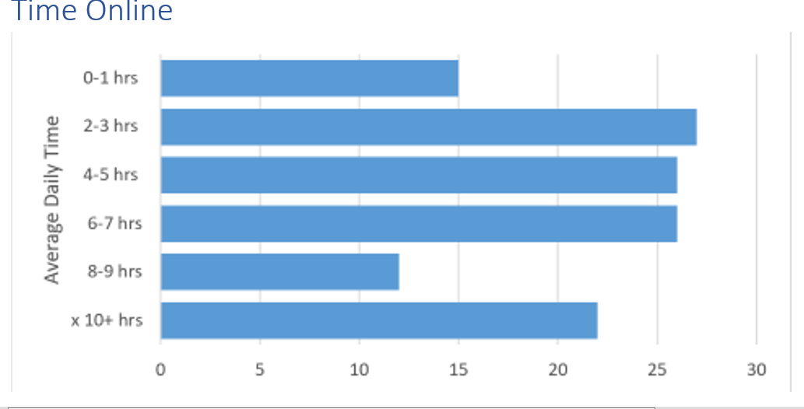
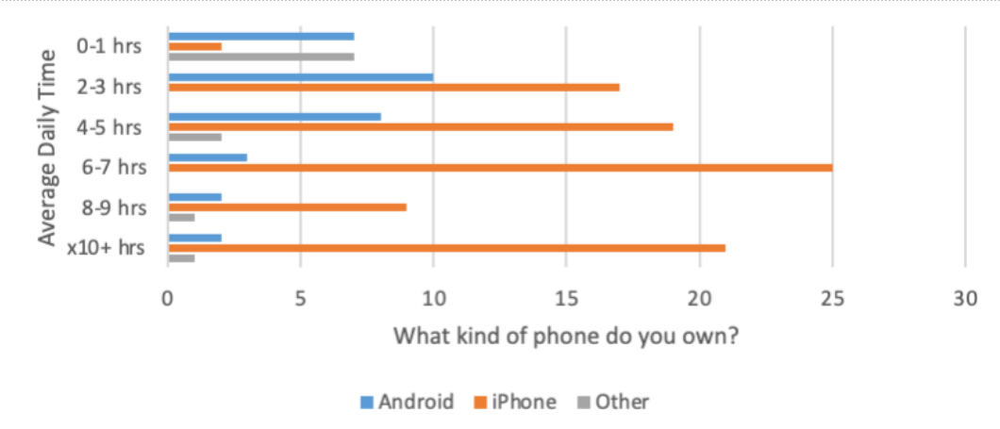
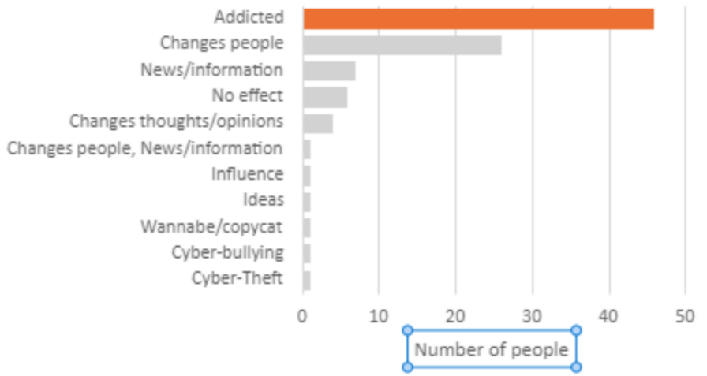

.
.
How can social media affect teen girls mental health and emotional health
By Tiffany Hill
Many people believe that obsession with social media may seem like trivial interactions. Although adults are guilty of their own digital obsession, for many teen girls, social media platforms have significant effects on their mental and emotional health. Students at Renaissance created a survey that asked about their social media use and its effects on their lives. An analysis of the survey data shows issues that are happening to teens across the country, particularly when they are isolated during quarantine.
Time Online
One question asked how many hours a day teenagers spend on their phones daily. From this survey, most teens averaged 2-3 hours daily. The smallest portion of teens spend 8-9 hours on their phones, and next to that was teens who spend 0-1 hour on their phones every day. The average time spent online is 5 hours per day. This amount is like the five to seven hours per day reported by Common Sense Media in 2019.
Time Online based on Phone Type
Many teens prefer what type of phone they have. iPhone users overall spend more time on their phones compared to android users. iPhone users spend 2-3 hours online daily spend most of their screentime on Twitter. iPhone users on Instagram spend 10+ hours daily online.
On the other hand, Android users overall spend less time on their phones compared to apple users. On average, android users spend 0-1 hours on Tik Tok and 4-5 hours on YouTube.
Effects of Social Media
On average, a large portion of teens believe that they are not addicted to social media and are fine with how long they spend on social media daily.
This graph shows that the majority of teenagers, especially teen girls, are addicted to their phones and social media. Out of all the categories listed in this chart, 45 teens appear to be addicted and the next category states that social media has the ability to change people.
According to The Family Institute at Northwestern University's Managing the Effects of Social Media on Teen Girls, social media has a negative impact on the mental and emotional health of teen girls. In the study, "Researchers who studied data on more than 10,000 adolescents found frequent social media use disproportionally affects teen girls’ mental health more negatively than that of teen boys.” This article discusses the negative impact of social media such as not sleeping enough, cyberbullying, depression, isolation, and lack of exercise daily.
In addition, social media can affect teens' body image and teens question themselves due to comparing themselves to celebrities and famous influencers. Some teens might have difficulty with believing the images they view versus reality. It is important that parents help teenagers to practice healthy uses of social media by balancing life outside social media such as physical and social activities.
Social media can negatively impact teenagers, specifically teen girls. It is important to realize the damaging effects of social media. Parents and adults can help and educate teens to balance social media by spending time with your family, socializing with friends, and engaging in physical activities such as music, dance, exercise, arts, and sports